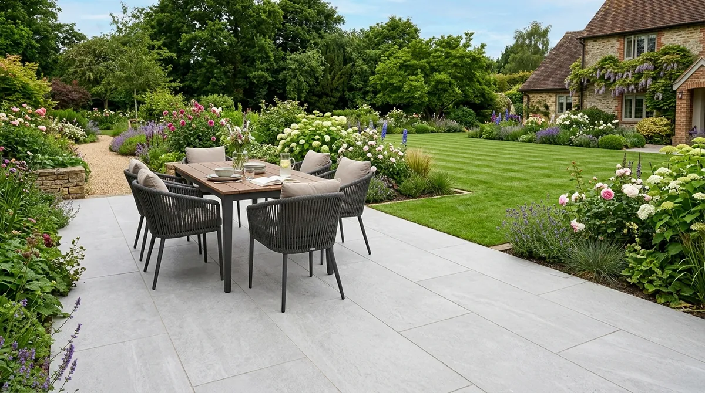

LUXURY VITRIFIED PORCELAIN PAVING
Porcelain Patios Glasgow & West End
Ultra-durable R11 anti-slip, non-porous Italian vitrified porcelain patios installed across Glasgow, West End, Bearsden & Clydebank.
Why Is Italian Vitrified Porcelain Paving Ideal for Scottish Winter Weather?
Direct Answer: Vitrified Italian porcelain slabs have a near-zero water absorption rate (< 0.05%), making them 100% frost-proof, moss-resistant, and stain-proof under severe West of Scotland freeze-thaw winter conditions. Laid on an SBR slurry primer slurry wet mortar bed over 150mm MOT Type 1, porcelain patios maintain permanent structural adhesion without cracking or algae staining.
At Brickscapes Limited, led by master tradesman Joe Church, we install premium 20mm R11 anti-slip vitrified porcelain patios across Glasgow West End, Bearsden, Clydebank, and Newton Mearns, delivering low-maintenance luxury Outdoor living spaces.

20mm Vitrified Italian Porcelain
R11 Anti-Slip Surface
SBR Slurry Primer Bonding
Full Mortar Bed Method
External Resin Grouting
10-Year Guarantee
Porcelain Patio Cost Breakdown per m² (2026 Glasgow Pricing)
| Porcelain Paving Option | Cost Range per m² | Included Installation Specs |
|---|---|---|
| 20mm Standard Italian Porcelain (600x600) | £110 – £135 / m² | 150mm MOT Type 1 Base, SBR Primer Bed & Resin Grout |
| Large Format Porcelain Slabs (900x600 / 1200x600) | £135 – £165 / m² | Precision SuDS Drainage, SBR Bonding Slurry & Expansion Joints |
| Premium Textured Wood-Effect Porcelain | £145 – £175 / m² | Full Excavation, Heavy Sub-Base & All Materials Included |